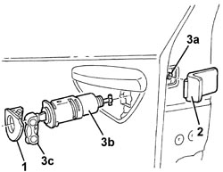
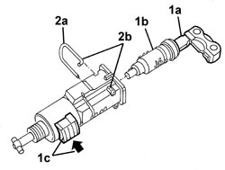
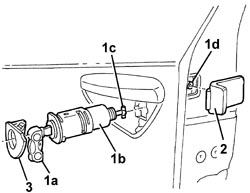

7005C17 FRONT SIDE DOOR LOCK BARREL - R.R.
- Path
- Procedures > 70 FITTINGS > 7005 PASSENGER COMPARTMENT FRONT SIDE DOORS > 7005C FRONT DOOR LOCK CONTROLS > 7005C17 FRONT SIDE DOOR LOCK BARREL - R.R.
- Kind
- repair procedure (removal / refitting; the operation number is the code)
- Applies to
- all engines; all production periods
- Interactive page
- https://sloeber94.github.io/elrnDB/alfa/159/en/#/939011122
Applies to: all engines; all production periods
 Removing
Removing
 Refitting
Refitting- Open the door.
1. Release the trim from the inner retainers and remove it.
2. Release the rubber trim.
3. Loosen the inner bolt (3a) until the lock assembly (3b) can be released with the key (3c) inserted.

Applies to: all engines; all production periods
1. Release the end (1a) of the retaining clip (1b), then extract it keeping the retainer (1c) pressed.
2. Insert the key (2a) in the lock (2b) and extract it pressing the retainer (1c).
Applies to: all engines; all production periods
Refitting
Removing- Check that the lock barrel for the key is not damaged.
1. Insert the lock (1b) with the key (1a) in place, keeping the retainer (1c) pressed.
2. Fit the retaining clip (2a), then atttach the end (2b).

Applies to: all engines; all production periods
1. Using the key (1a), fit the lock barrel (1b), attaching the end (1c) in the housing, then tighten the lock barrel retaining bolt (1d).
2. Fit the rubber trim.
3. Fit the trim attaching the inner retainers.

Applies to: all engines; all production periods
- Check that the lock barrel is working.
Topics that link to this page (13)
- 5505B11 FRONT DOOR WIRING (ONE) LEFT OR RIGHT - R.R
- 7005A08 INTERIOR SUPPORT FRAME FOR ONE SIDE DOOR - R.R. WITH DOOR PANEL REMOVED
- 7005A09 FRONT SIDE DOOR INTERIOR SUPPORT FRAME - R.R.
- 7005C10 FRONT DOOR EXTERIOR HANDLE - R.R WITH DOOR PANEL REMOVED
- 7005C11 FRONT SIDE DOOR EXTERIOR HANDLE - R.R
- 7005C20 FRONT SIDE DOOR LOCK BARREL - REPLACE WITH DIFFERENT UNIT
- 7005C41 FRONT SIDE DOOR EXTERIOR HANDLE LOCK CONNECTION LINK - R.R
- 7005D24 FRONT DOOR WINDOW REAR GUIDE - R R
- 7005D25 FRONT DOOR WINDOW REAR GUIDE - R R
- 7005D33 CHANNEL FOR DOOR DESCENDING GLASS INNER GUIDE (ONE) LH OR RH ON FRONT SIDE DOOR - R.R.
- 7005M26 ELECTRIC WINDOW MECHANISM FOR ONE FRONT DOOR LH OR RH - R.R
- 7005N21 FRONT SIDE DOOR LOCK MOTOR/LOCK ASSEMBLEY FOR ONE DOOR, LEFT OR RIGHT - R.R.
- 7205E36 STRIPPING FRONT SIDE DOOR